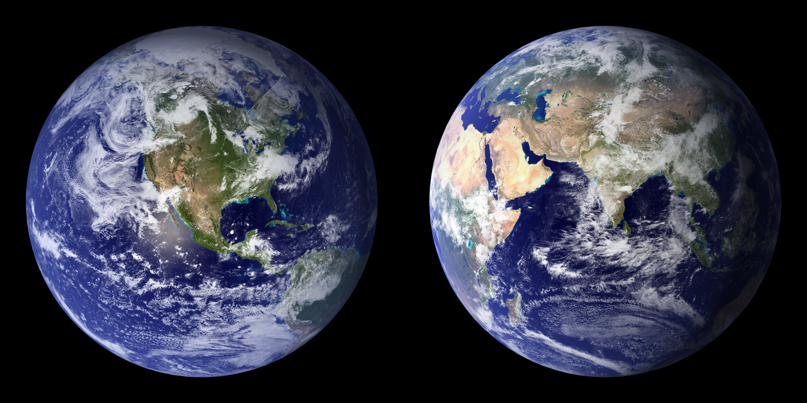

| Mercury | Venus | Earth | Mars | |
|---|---|---|---|---|
| Images |  |
 |
 |  |
| Mass (10^24 kg) | 0.330 | 4.87 | 5.97 | 0.642 |
| Diameter (km) | 4,879 | 12,104 | 12,756 | 6,794 |
| Density (kg/m³) | 5,427 | 5,243 | 5,515 | 3,933 |
| Surface gravity (m/s²) | 3.7 | 8.9 | 9.8 | 3.7 |
| Escape velocity (km/s) | 4.3 | 10.4 | 11.2 | 5.0 |
| Rotation period (hours) | 1,407.6 | −5,832.5 | 23.93 | 24.62 |
| Distance from Sun (10^6 km) | 57.9 | 108.2 | 149.6 | 227.9 |